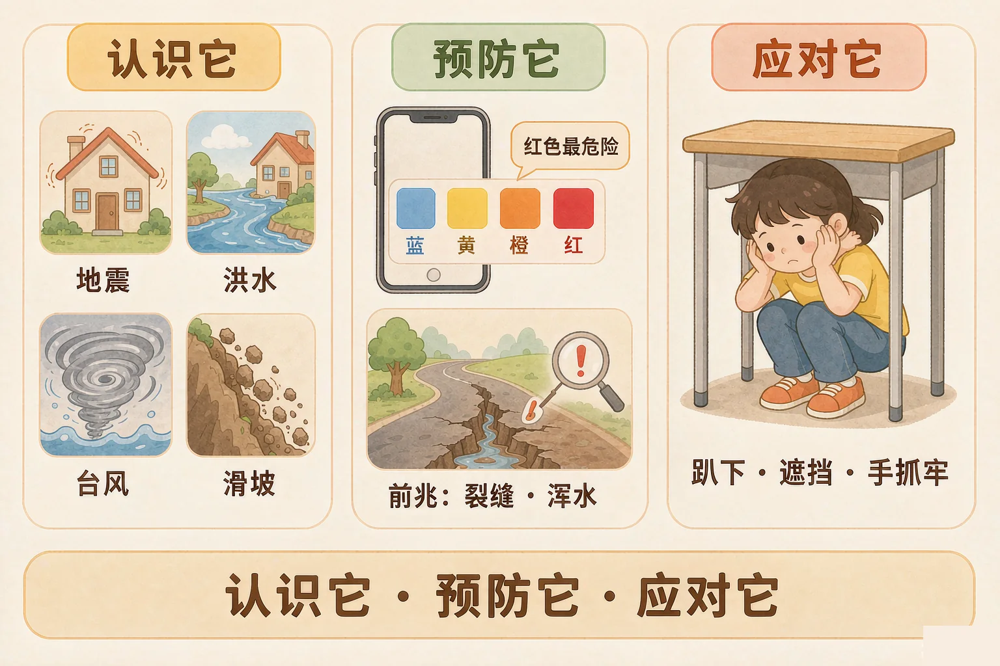
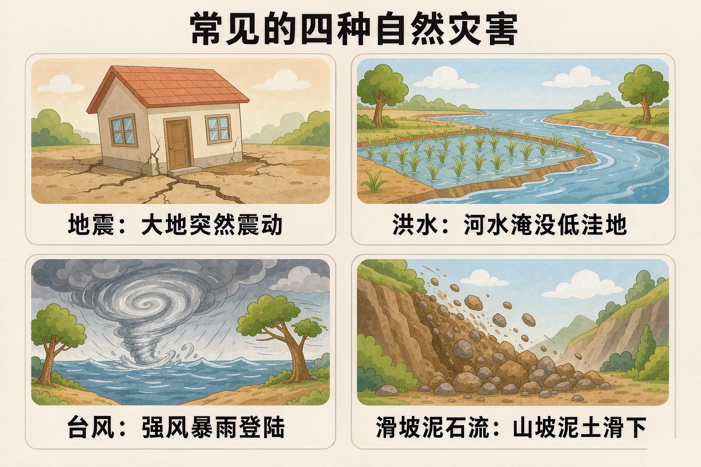
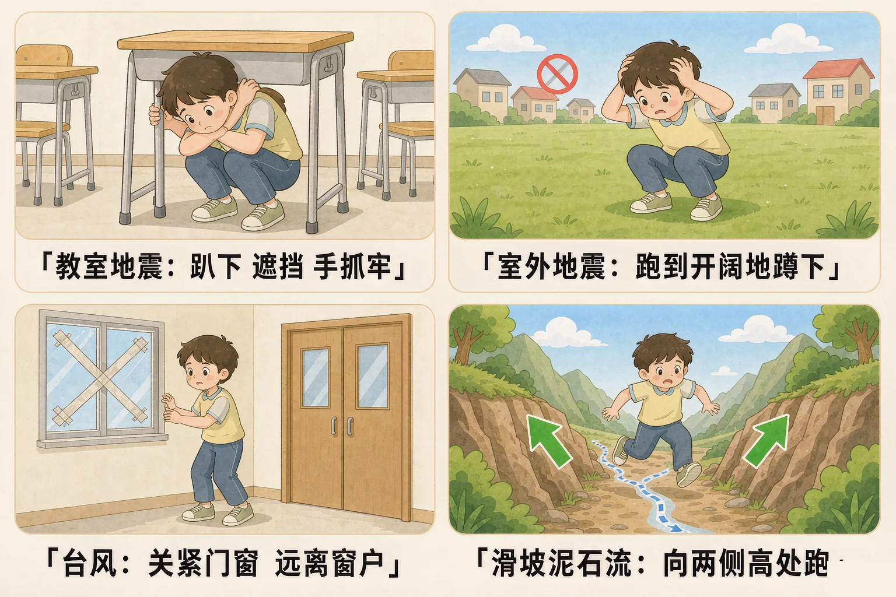

小学五年级 · 地球与宇宙科学 · 人类活动与环境
地震、洪水、台风来的时候，我们第一时间该做什么？

选一个你真正关心的问题，后面的判断和演练都会围着它转。
选择或输入后，这节课会围绕你的问题展开。
先凭直觉选一个，选完立刻看到解释——错了也没关系，正好知道要重点听哪里。
1. 下面哪一组都属于自然灾害？
自然灾害是由自然原因引起、并对人的生命财产造成危害的现象。错因提醒：不要把人为原因造成的事故和自然灾害搞混。
2. 课堂上突然发生地震，最正确的第一反应是：
震动最厉害的时候，先就近躲避、护住头颈最安全。错因提醒：常见错误是误认为跑得越快越好，其实这时冲楼梯、挤楼道和靠近窗户都更危险。
3. 气象台发布暴雨红色预警，这个颜色表示：
预警颜色从低到高是蓝色、黄色、橙色、红色，红色代表危险程度最高。
自然灾害是指由自然原因引起、并对人的生命和财产造成危害的现象。小学阶段我们重点认识下面四种。
🌐 地震
大地突然震动，房屋可能开裂甚至倒塌，多发生在板块交界的地方。
🌊 洪水
暴雨或者连续降雨让河水猛涨，淹掉地势低洼的地方。
🌀 台风
从海上来的强烈风暴，带着狂风和暴雨，主要影响我国东南沿海。
⛰️ 滑坡、泥石流
山坡上大量泥土和石头突然滑下来，常出现在山区连下暴雨的时候。

🔍 深层理解 换个角度再看一遍这件事，看看能不能说出背后的原理。
看见它：四种灾害看起来不一样，但有一点相同：它们的力量都远远超过一个人，所以我们不跟它硬碰，而是躲开它。
解释它：为什么东南沿海多台风、西南山区多滑坡？因为灾害和当地的地形、气候直接相关，这也是不同地区多发灾害不同的原因。
比较它：台风和洪水都和水有关，但台风从海上来、带着狂风，洪水多由河水上涨造成，应对方法也不一样。
每题只选一个做法。选完会立刻告诉你哪里对、哪里错，还会说清正确做法。
情境 1：课堂上，教室突然摇晃起来，头顶的电灯也在晃。
情境 2：暴雨过后，山路上出现了一条新裂缝，路边泉水变浑浊，还有小石块往下掉。
情境 3：台风登陆，家里的窗户被风吹得哐哐响。
情境 4：洪水已经漫到小腿，水流有点急，你要去对面的高处。
情境 5：手机收到暴雨红色预警，外面的雨非常大。
防灾减灾就三件实事：认识前兆、看懂预警、做对动作。

误认为遇到灾害「跑得越快越好」。地震时第一时间冲楼梯、洪水时涉水抄近路、滑坡时顺着沟往下跑，都是把危险放大的常见错误。正确顺序是：先躲开、再找安全处、最后才往外走。
点一个场景，看正确的姿势示意图和三条要点，然后自己跟着做一遍。
题目：暑假里几个同学在山里玩，下了一场大暴雨，他们躲进山谷里的小亭子。雨停后，山路出现一条新裂缝，旁边水沟里水很浑，还有小石块往下掉。这时应该怎么做？请说明理由。
一看到下雨就往谷里的亭子躲，或者想着「顺着沟快点跑出去」，是这道题最常见的错误。请记住这句口诀：不顺着沟跑，往两侧高处跑。
先凭直觉选一个，选完立刻看到解释——错了也没关系，正好知道要重点听哪里。
1. 下面哪句话是正确的？
灾害和当地的地形、气候有关，所以不同地区多发的灾害不同。错因提醒：常见错误是把某一种灾害当成全国到处都一样，忽略了地区差异。
2. 关于预警颜色，下面说法正确的是：
颜色从低到高是蓝、黄、橙、红。错因提醒：容易误认为预警只是普通提醒，其实颜色越深，越需要马上按提示行动。
3. 滑坡、泥石流来了，应该往哪个方向跑？
泥石流顺着沟谷往下冲，向两侧高处跑能最快离开它的路线。错因提醒：把「顺着沟跑得快」当成好办法，是这一课最危险的常见错误。
选一种你最想弄清楚的灾害，为班级做一张防灾小卡片。
卡片必须写清三样：这种灾害的前兆 · 对应的预警颜色 · 两到三个正确动作
我选的灾害是：
卡片内容（前兆 / 预警 / 动作）
先凭直觉选一个，选完立刻看到解释——错了也没关系，正好知道要重点听哪里。
1. 在操场上上课时突然发生地震，最正确的做法是：
操场上空间开阔，就近跑到空旷处蹲下护头最安全。错因提醒：不要误认为楼里更安全，这时往楼里跑，反而会靠近可能掉落的东西。
2. 冬天湖面结了冰，有同学想去冰上走一走。最合理的做法是：
冰面情况看不出来，人多反而增加压塌的风险。远离危险区域是防灾的第一步。
3. 教学楼里突然闻到焦味，走廊有烟。最正确的做法是：
火灾时应走疏散楼梯，弯腰低姿减少吸入烟雾。错因提醒：不要误认为电梯更快，着火时电梯可能停运或者断电。
回到开头的问题：遇到危险，最重要的不是害怕，而是认得出、躲得对。灾害的力量我们改变不了，但正确的知识和动作，能实实在在减少伤害。
给别人讲一遍：请用「前兆、预警、动作」这三个词，把一种灾害的防灾办法讲给家人听。
三层练习，做完第一、二层就算通关；第三层留给愿意继续探索的同学。
⭐ 基础巩固（必做）
⭐⭐ 能力应用（必做）
⭐⭐⭐ 迁移挑战（选做）
左边是学它之前要先会的，右边是学会之后可以继续探索的，下面是同一领域的伙伴知识。